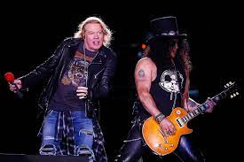
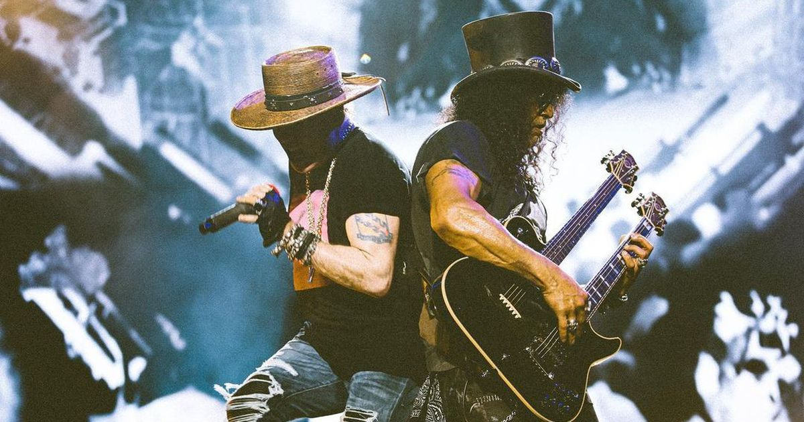
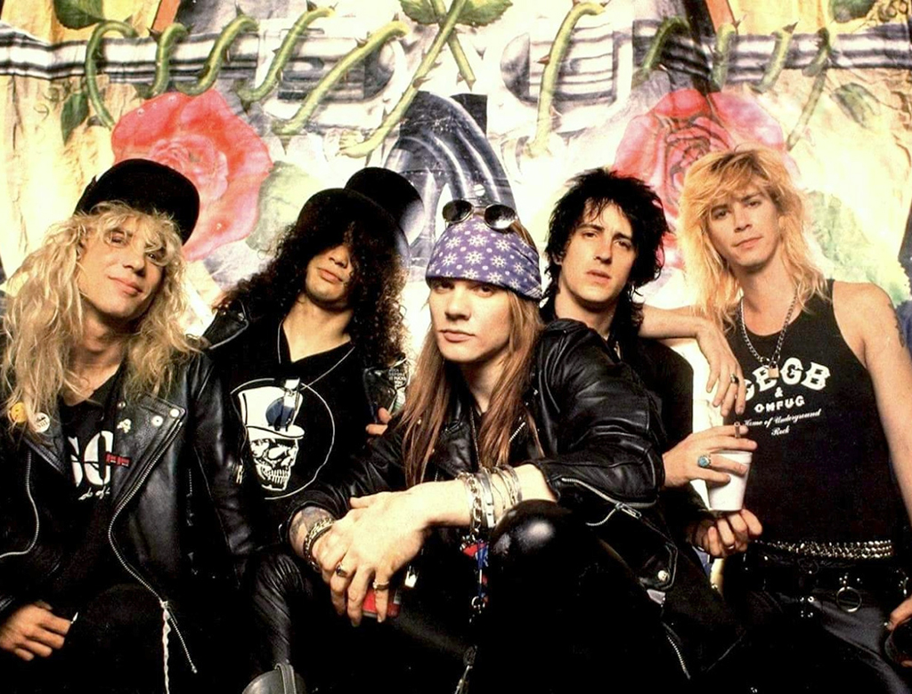
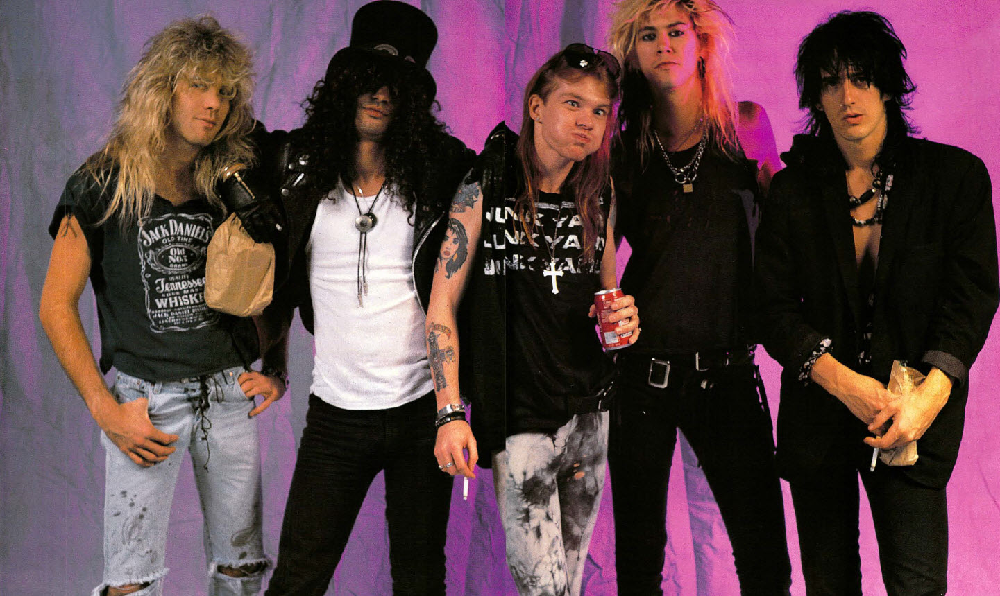
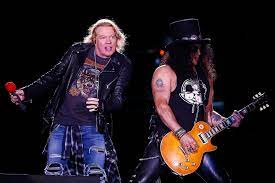
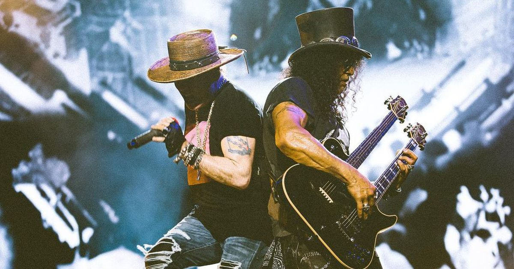
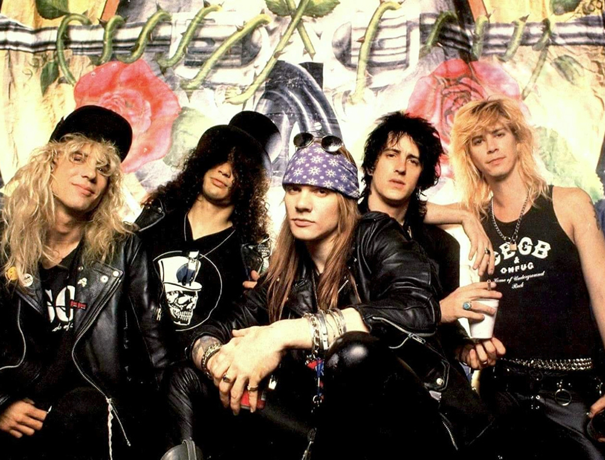
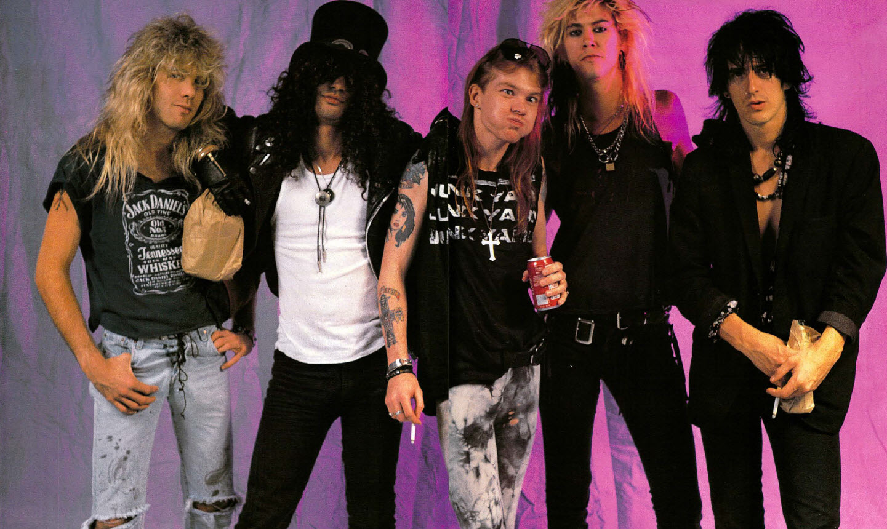

Breve reseña de la historia de Guns and Roses
Guns N Roses es una banda fraguada en las calles de Los Angeles, entre bares y trabajos de medio tiempo. Sus cinco integrantes se reunieron por una pasión: la música. Un aviso en un periódico fue su lazo de comunicación. En realidad, el grupo es el resultado de la fusión de dos bandas: L.A Guns y Hollywood Rose.La banda fue formada en marzo de 1985 por Axl Rose (voz, teclados), Tracii Guns (guitarra líder), Izzy Stradlin (guitarra rítmica, coros), Ole Beich (bajo) y Rob Gardner (batería). Los cinco miembros originales eran de dos grupos diferentes, L.A. Guns (que más tarde fue reformado) y Hollywood Rose. Posteriormente, los miembros decidieron combinar los nombres de los dos grupos antes mencionados y así surgió el nombre Guns N' Roses. Los de Hollywood Rose eran Axl Rose (voz) e Izzy Stradlin (guitarra rítmica), mientras que de L.A. Guns llegaron Tracii Guns (guitarra solista), Ole Beich (bajo) y Rob Gardner (batería).20 Ole Beich, originalmente de L.A Guns, abandonó la formación pocos días después de la creación del grupo siendo reemplazado por Duff McKagan, quien debutaría con los demás en el primer show de la banda el 26 de marzo de 1985 en el Troubadour. Finalizado su séptimo espectáculo, el 12 de mayo en Joshua's Record, el guitarrista Tracii Guns fue expulsado de la banda debido a diferencias con Axl Rose, tras su salida refundo L.A Guns. Al día siguiente Rob Gardner decidió abandonar el grupo. En sus lugares llegaron Saul Hudson, más conocido como Slash y Steven Adler quienes tenían experiencia previa en varias bandas, además de tener buena relación con Axl e Izzy por haber formado parte de una alineación de Hollywood Rose solo unos meses atrás. Con esta formación (Axl, Slash, Izzy Stradlin, Duff y Adler) alcanzarian la fama mundial. Su debut se daría el 6 de junio en el Troubadour
Discografía
- 1987-Appetite for Destruction
- 1988-GN'R Lies
- 1991-Use Your Illusion 1 y 2
- 1993-The Spaghetti Incident?
- 2004-Greatest Hits
- 2008-Chinese Democracy
Galería de fotos
 






